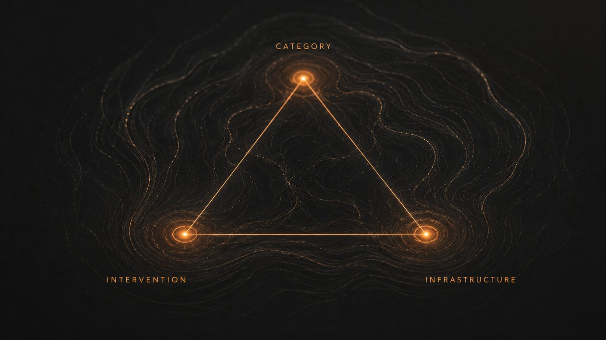

NIA: the category beneath the adult ADHD cost wave.
Lisdexamfetamine, medicine-plus-continuity, and the pathway that holds recovery.
New Category · New Intervention · New Infrastructure. From Dean Butler, Founder, OTOS Continuity. Exploratory — for internal routing and review. NIA is proposed terminology, not an official diagnosis. AstraZeneca is not being asked to make or own Elvanse (lisdexamfetamine is Takeda's) — this is about the medicine-plus-continuity category. No AstraZeneca endorsement is assumed or implied.
Contents.
A first-mover category, an intervention model and the infrastructure to evidence both — opened door by door.
NIA — Neurologically Informed Addiction.
NIA — Neurologically Informed Addiction — is proposed terminology coined by Dean Butler / OTOS. It is not currently an official diagnosis. It names a real, under-recognised addiction pattern where underlying neurology — especially ADHD — can drive self-medication, poor treatment retention, relapse and recurring public cost.
The lived origin term was Double Trouble Diagnosis (DTD). NIA is the professional, AZ / NHS / investor-facing category that should now be researched, piloted and recognised — alongside, never replacing, existing diagnoses and services.
I am proof.
For 35 years the pattern ran unnamed: undiagnosed ADHD, self-medication, addiction, six A&E presentations, three detoxes.

Dean is not proof that NIA is officially recognised. Dean is proof that the pattern is real — and that the current pathway did not know how to hold it.
The medicine that let recovery land.
My private ADHD diagnosis and clinical letter are the documented anchor of the founder case. "In my lived case, lisdexamfetamine was the stabilising ADHD medication that allowed recovery to finally land."
The system helped me — off-pathway.
The services did help me — but they had to help me off-pathway, because the named pathway did not exist. Good people improvised a route the system hadn't built. Help that depends on improvisation cannot be relied on, or scaled.

Did not exist. No route was designed to hold someone whose ADHD was driving the addiction.
Improvised, off-pathway. Good people went out of their way — but help that depends on improvisation cannot be relied on, or scaled.
The wave is already being rationed.
Adult ADHD assessment and treatment in England are under acute strain. Demand is rising sharply; waiting lists run to years in places; and Integrated Care Boards, under hard financial pressure, have begun rationing access. From 21 May 2025, Coventry & Warwickshire paused new adult ADHD Right-to-Choose referrals for people aged 25 and over, to redirect capacity to children. Through late 2025 and into 2026, at least nine NHS areas instructed Right-to-Choose providers to pause new autism and ADHD assessments on funding grounds, under NHS England's 2025 activity-cap contracting.
When adult ADHD assessment and treatment capacity is restricted, the system does not remove the need. It stores it as future crisis. Adults with untreated or under-treated ADHD may self-medicate; some then cross into addiction, relapse, A&E, detox, crisis mental health, safeguarding, police, courts and prison. Because ADHD remains unrecognised, the system repeatedly treats the downstream manifestation while the upstream neurological driver remains untreated.
Publicly verified evidence shows local adult ADHD referral pauses, restrictions, prioritisation and at least one clear over-25 adult-access restriction (Coventry & Warwickshire). Dean's earlier "over-23" language is his risk-band / forecast language unless separately verified. The evidence does not yet prove a national "tsunami" — but it shows the conditions for one. OTOS is the breakwater: a continuity layer that holds the person while the clinical system catches up.
The system is already paying — in the worst possible places.
Untreated or under-treated ADHD can drive self-medication. Self-medication becomes addiction; addiction becomes relapse, A&E, detox, crisis, courts and family collapse — and the bill lands everywhere except where the problem started. Known to services, but not held between them. One untreated NIA / ADHD-linked addiction case is not one cost. It is a cost halo.
Context — published evidence candidates, not OTOS outcomes. Cost framing is an order-of-magnitude model of the whole burden (incl. £27.44bn/yr alcohol harm, IAS 2024) — not a guaranteed per-case invoice.
Three things, working as one.
None works alone. Together they are a category, a model and a moat.

NIA
Neurologically Informed Addiction — the lens that names the pattern the system keeps missing.
Medicine-plus-continuity
ADHD medication stability + addiction recovery support + adherence, persistence, relapse-risk visibility + behavioural reinforcement.
OTOS
The Connected Pathway that finds the cohort, holds the person and generates the evidence.
The molecule is not enough. The pathway is the product.
"This is not a single-molecule pitch — it is a first-mover category, intervention and infrastructure opportunity in a future medicine-plus-continuity market." Medication stability is the prerequisite; the pathway around it — diagnosis and access, adherence, persistence, relapse-risk visibility, recovery support and behavioural reinforcement — is the product.
Lisdexamfetamine (Elvanse/Vyvanse) is owned by Takeda. In the US, patents have expired and generics launched (2023).
Separately, the UK has faced ADHD-medication shortages and demand pressure since 2023 — distinct from US exclusivity; UK generic status is not asserted here.
Held across every gap.
OTOS is the Connected Pathway for the Whole Person — holding the person across medication access, addiction recovery, service handoffs, behavioural reinforcement and long-term engagement. Addiction is disconnection; OTOS is connection.
Surface
Micro-check-ins, drift visibility before crisis, and relapse-risk signals across services.
Hold
Handoff receipts, human review, service connection, retention and engagement.
Evidence
Evidence capture and real-world learning. Onboarding flexes from a QR code to a dashboard to multi-agency intelligence.
The first product is not a cure. It is visibility.
You may not own ADHD today. That is the opening.
"AstraZeneca may not own ADHD today. That is the opening. NIA is not yet a market. That is the opportunity." The adult-ADHD-wave evidence makes this a future market-pressure and health-system-risk category: demand is rising while access is being rationed, which stores need as downstream addiction and crisis cost.
- A.Catalyst-aligned themes — early identification, digital transformation, data generation, ecosystem innovation and scalable healthcare solutions — all NIA territory.
- Evinova is moving into digital remote monitoring — adjacent to the Connected Pathway.
- Patient support and adherence are live concerns across the ADHD medication pathway.
- AZ's global HQ is in Cambridge — where the demonstrator would run.
Eight doors. Open one to start.
In priority order — open one to begin.
Please route this for a first-mover NIA category review, with parallel consideration by Patient Support / Adherence and A.Catalyst for a Cambridge evidence demonstrator.
50 people. 12 weeks. The first proof.
A bounded Cambridge demonstrator turns modelling into local, real-world pathway intelligence and a partner-grade evidence pack — for a fraction of the cost of a single avoidable crisis episode.

- Findings before scale — the demonstrator answers whether the category and model hold before anyone commits to more.
- Real-world evidence — retention, drift, relapse-risk visibility and pathway intelligence, captured under a defined framework.
- Gated by governance — consent, data protection, safeguarding and clinical oversight gate any pilot.
Bold on the pattern. Honest on the proof.
None of these are OTOS outcomes. They are published evidence candidates plus an honest account of what is not yet proven.
- Co-occurrence evidence — NDTMS and Huntley (2012).
- ADHD & alcohol cost — NHS England ADHD Taskforce (2025) and IAS (2024).
- RCPsych recognises ADHD as a risk factor for early-onset substance misuse and supports joint management; an NIA pathway-recognition submission to RCPsych is in progress checked source
- CGL / Change Grow Live — front-line precedent for ADHD work inside substance-use services checked source
- Adult-ADHD access-restriction layer — over-25 pause, multi-ICB RTC pauses, waiting-list & prescribing growth.
- Governance, consent & data-protection pack.
- Clinical-oversight model.
- Regulatory classification review.
- Real-world learning-report template.
NIA is not yet a market. That is the opportunity.
The molecule commoditises; the pathway compounds. First-mover advantage sits around the category — the language, the first evidence base, the continuity infrastructure and the medicine-plus-continuity model — not the compound alone. The category becomes more urgent, not less, if adult ADHD access is rationed while demand grows.
Category
Help define NIA before the market names it for you.
Proof base
Generate the real-world evidence nobody else is generating.
Infrastructure
Understand the continuity layer the whole pathway runs on.
For AstraZeneca this is early, low-cost optionality at pre-market pricing — grant, sponsorship, demonstrator or option-to-invest — never a commitment up front. Commercial framing is potential, not projection.
What OTOS does — and does not — do.
OTOS Continuity is early-stage and non-clinical. Its discipline is the boundary: it holds the person across services without ever stepping into the clinical decisions that belong to partner teams.
- Surface signals across services
- Hold the person across the pathway
- Capture real-world evidence
- Support retention and engagement
- Diagnose ADHD
- Prescribe, manage or promote medication
- Treat addiction or deliver therapy
- Replace any service or make clinical decisions
A first look at a category before it is a market.

Not a single-molecule pitch. Not a funding demand. "Please route this for a first-mover NIA category review, with parallel consideration by Patient Support / Adherence and A.Catalyst for a Cambridge evidence demonstrator" — and a short conversation about whether it fits.
NIA is proposed terminology, not an official diagnosis. Founder proof is not population proof. Lisdexamfetamine is not claimed to cure addiction or be right for everyone. OTOS does not diagnose, prescribe, manage medication, treat addiction or make clinical decisions. No AstraZeneca endorsement is assumed or implied.
dean@otos.life · 07585 899 235
Medication-pathway facts.
| Claim | Source | Status |
|---|---|---|
| Lisdexamfetamine = Elvanse/Vyvanse, owned by Takeda (ex-Shire) | Takeda / Shire (2019) | Fact — owned by Takeda, not AstraZeneca |
| US patents expired; generics launched 2023 | FDA / DrugPatentWatch | Fact (US) — US generics launched 2023 |
| UK generic lisdexamfetamine entry | — | Research gap — not asserted; keep US/UK distinct |
| UK ADHD-medication shortages & demand pressure from 2023 | Sector / press data | Fact — distinct from US exclusivity |
| Medication stability as recovery prerequisite (founder case) | Dean's clinical letter | Clinical anchor — founder case, not a population study |
| Improvement in addictive disorders after ADHD dx + treatment | START study (2025), observational | Evidence candidate — 61.3%, warrants confirmation |
Note — OTOS does not prescribe, manage or promote medication. Any medication-pathway route is subject to regulatory, IP, MHRA, supply and commercial review.
Adult ADHD wave & access-restriction evidence.
| Claim | Source | Status |
|---|---|---|
| Adult ADHD Right-to-Choose referrals paused for over-25s | Coventry & Warwickshire (from 21 May 2025) | Verified, local — clear over-25 adult-access restriction |
| ≥9 NHS areas paused RTC autism/ADHD assessments on funding grounds | NHS England 2025 activity-cap; multi-ICB | Verified, regional — local pauses & prioritisation |
| "Over-23" access cut-off | Dean's earlier language | Risk-band / forecast — unless separately verified |
| ~2.5m people in England with ADHD (~1.6m over-25); prescribing +51% since 2019; shortages | Press / sector data | Published, approximate — scale context |
| National adult ADHD diagnosis ban | — | Not claimed — never assert a national ban |
| "Tsunami" framing | OTOS forecast | Risk forecast — not a clinical inevitability |
Note — the public evidence shows the conditions for a wave, not proof of one. over-25 = verified; over-23 = forecast; no national ban claimed.
DTD → NIA terminology bank.
| DTD — Double Trouble Diagnosis | The raw, lived origin term for ADHD and addiction running as one loop. Use in founder narrative only. |
| NIA — Neurologically Informed Addiction | The professional, proposed category. Lead term everywhere. Never "official diagnosis." |
| ADHD-linked NIA / ADHD-fuelled addiction | The first proof cohort. |
| Medicine-plus-continuity | The intervention model — medication stability plus the continuity pathway around it. |
| Connected Pathway / Connection Layer | The OTOS infrastructure. Not "app" or "tool." |
| Breakwater | OTOS holding the person while the clinical system catches up. |
| Cost halo / ripple / wave | The cost-multiplication metaphor — one untreated case radiating cost across budgets. |
| First-mover advantage / market-share potential | Commercial frame — always "possible / potential," never projected. |